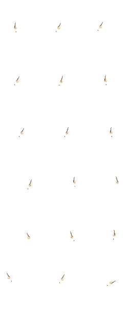

Bone palette only. Original custom dagger geometry, grip gaps and offsets retained. Not installed or tested in game.

Below: isolated movement loops and combat pose loop. Combat playback is illustrative, not verified game timing. No player body is composited.
